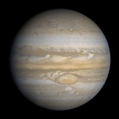
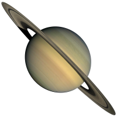
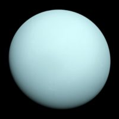
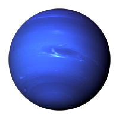

| Parameters | Jupiter | Saturn | Uranus | Neptune |
|---|---|---|---|---|
| Mass (kg) | 1.90 x 10^27 | 5.69 x 10^26 | 8.68 x 10^25 | 1.02 x 10^26 |
| Diamater (km) | 142,800 | 120,660 | 51,118 | 49,528 |
| Mean Density (kg/m^3) | 1,314 | 690 | 1,290 | 1,640 |
| Escape Velocity (m/s) | 59,500 | 35,600 | 21,300 | 23,300 |
| Avg Dist from the Sun | 5.203 AU (778,412,020 km) | 9.537 AU (1,426,725,400 km) | 19.19 AU (2,870,972,200 km) | 30.07 AU (4,498,252,900 km) |
| Rotation Period (Earth days) | 0.41 (9.8 Earth hours) | 0.44 (10.2 Earth hours) | 0.72 (17.9 Earth hours) (retrograde) | 0.67 (19.1 hours) |
| Revolution Period (Earth years) | 11.86 | 29.46 | 84 (30,685 Earth days) | 164.8 (60,190 Earth days) |
|  |  |  |  |